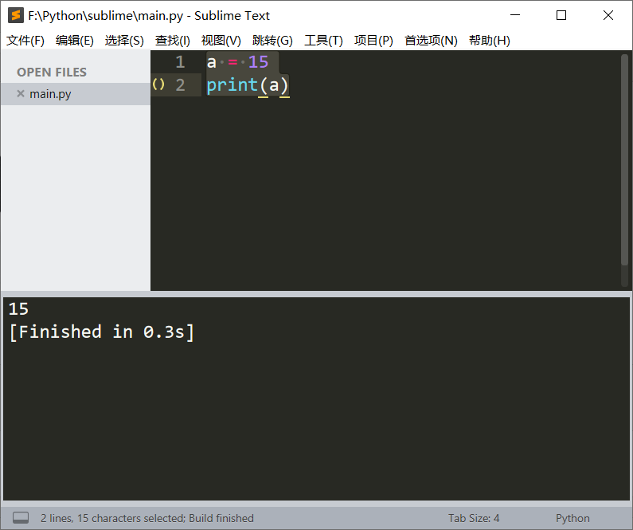
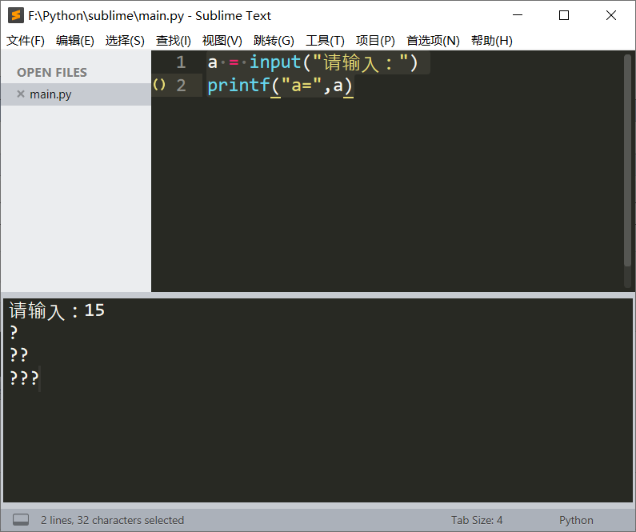
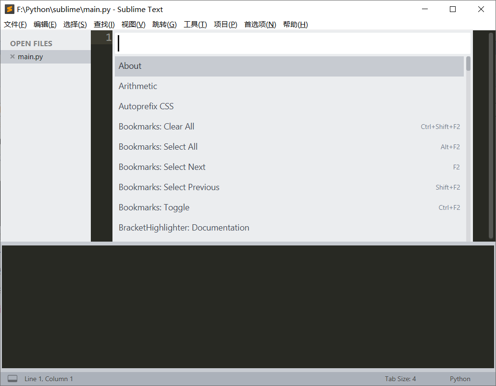
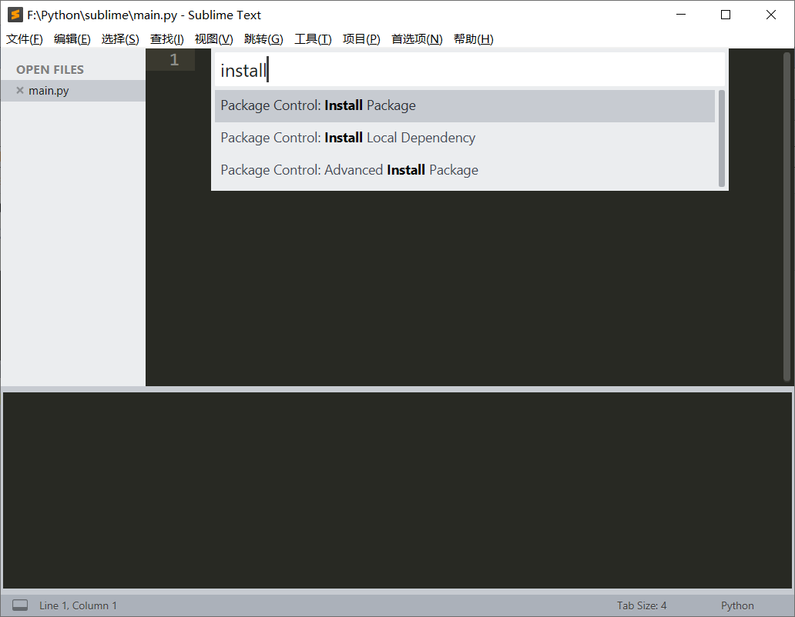
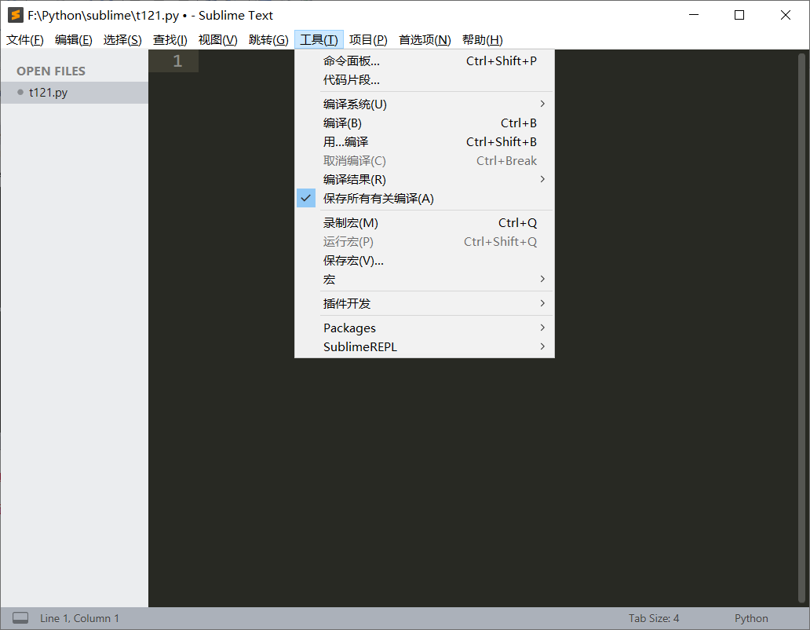
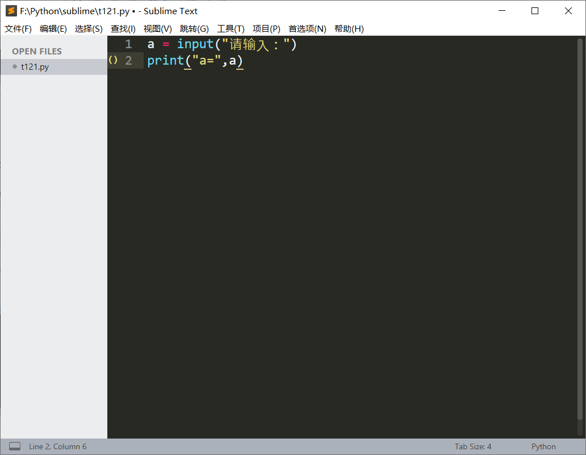
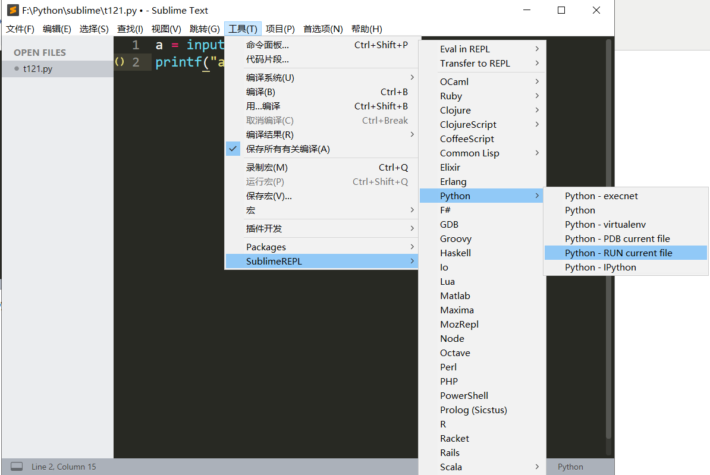
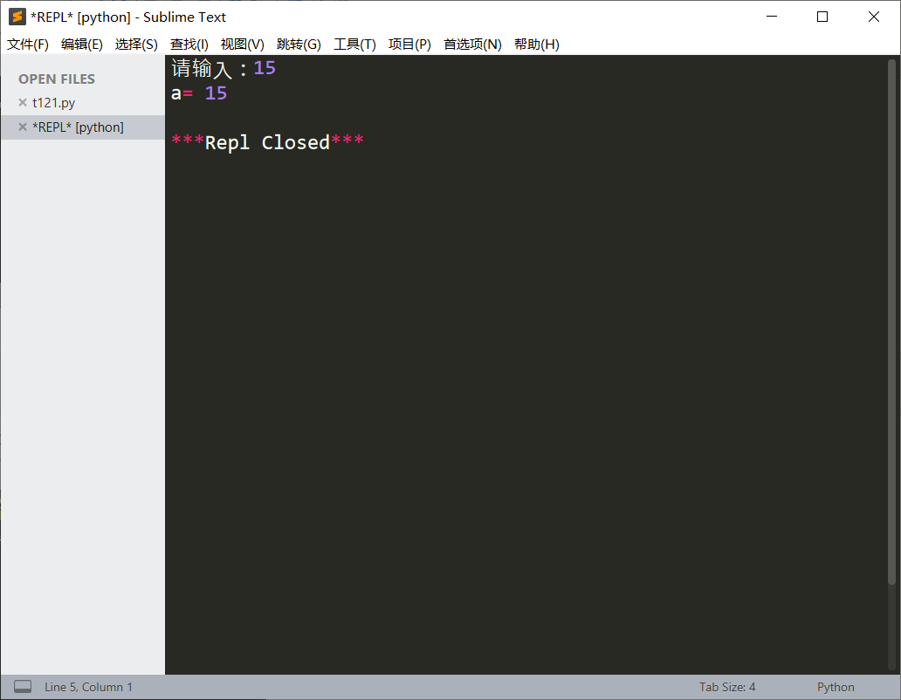
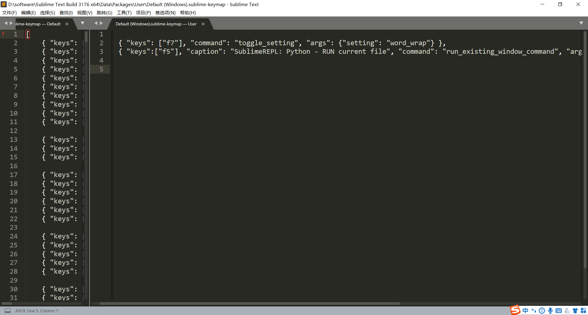

谈到python编程工具能想到那些？
pycharm？IDLE？
Sublime Text具有漂亮的用户界面和强大的功能，例如代码缩略图，Python的插件，代码段等，还可自定义键绑定，菜单和工具栏。
Sublime Text 的主要功能包括：拼写检查，书签，完整的 Python API ， Goto 功能，即时项目切换，多选择，多窗口等等。
它还是一个跨平台的编辑器，同时支持Windows、Linux、Mac OS X等操作系统。
简而言之，Sublime Text你值得拥有。
我今天要说的便是sublime的一款组件SublimeREPL
首先来给大家做个示范
a = 15
print(a)
简单粗暴的代码，一目了然的结果。

那么我们稍微升一下级；
a = input("请输入：")
print("a=",a)
依旧是简单粗暴的代码，但是结果却出人意料。

sublime本身是没有交互功能的，重复一遍sublime本身是没有交互功能的！！
那如何实现交互功能呢？猜想大家已经想到了，那就是加入SublimeREPL。
接下来我将为大家带来如何安装SublimeREPL
1.打开Sublime_text，按键Ctrl+shift+P打开命令面板

2.输入install，选择Package Control：Install Package（程序包控件，安装程序包）

3.选中后按键后敲击enter进入，在弹出的界面中搜索SublimeREPL点击下便可自动下载安装
4.完成安装后，打开工具，在最下方可以看到SublimeREPL即为成功安装（如下图）

那么接下来我们来实验一下刚刚的代码，首先输入代码

点击工具——>SublimeREPL
由于我们的代码为python语句，所以选择python语言中的Python-RUN current file

运行结果如下图所示，可喜可贺、幸不辱命

那么问题来了，每一次都要这样“麻烦”的调试程序么？
简单的方法来了，sublime可以自动设置快捷键！
简单的方法来了，sublime可以自动设置快捷键！
简单的方法来了，sublime可以自动设置快捷键！
重要的事情说三遍！！！
网上有很多改快捷键的教程，选定了一个最为简单的方法，亲测有效
首先点击首选项
其次打开快捷键设置
然后输入神秘代码
最后关闭保存
好了，改完键了
是不是很简单??
最后送上神秘代码↓↓↓↓↓↓↓↓↓↓↓↓↓↓↓↓
{ "keys": ["f7"], "command": "toggle_setting", "args": {"setting": "word_wrap"} },
{ "keys":["f5"], "caption": "SublimeREPL: Python - RUN current file", "command": "run_existing_window_command", "args":{"id": "repl_python_run","file": "config/Python/Main.sublime-menu"}}

记得关注么么哒